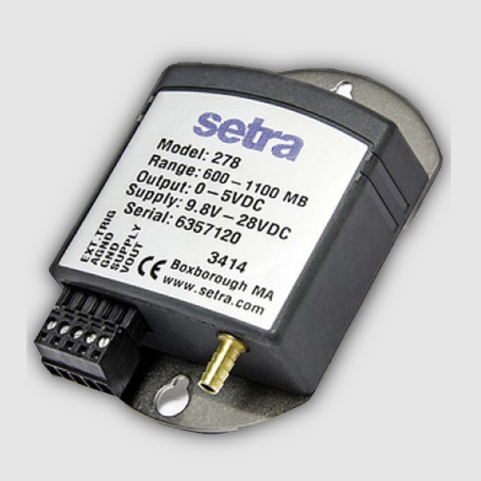
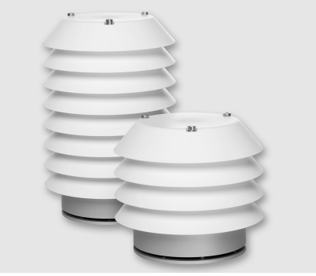
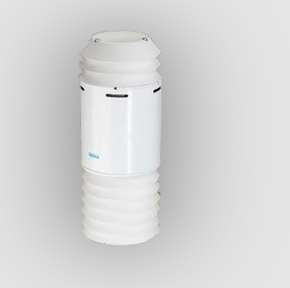
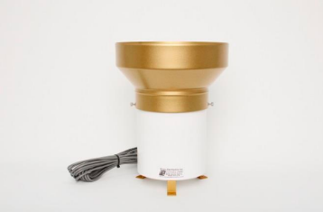
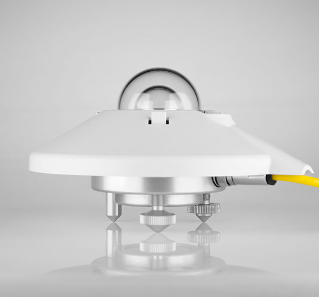
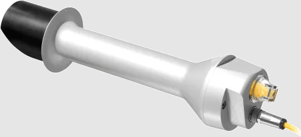
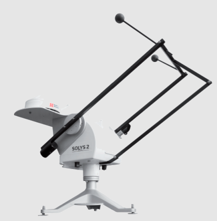
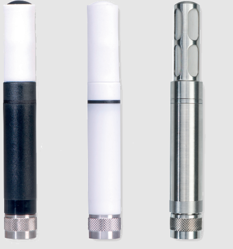
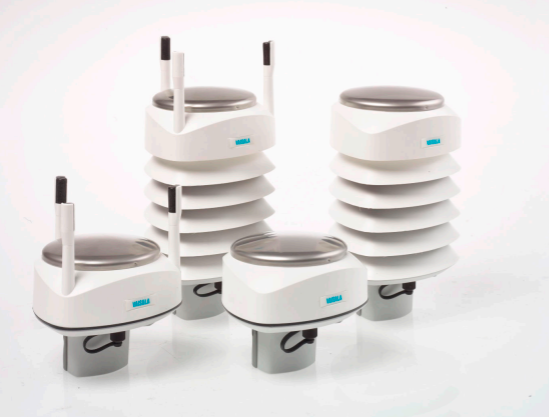
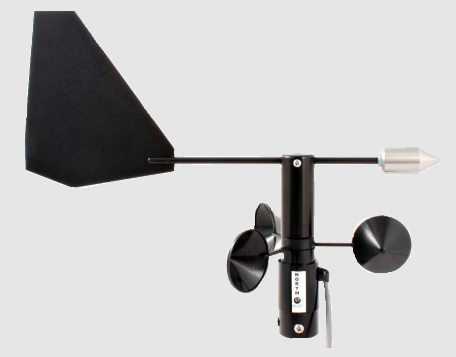

Sensores Meteorológicos

Presión Atmosférica
Barómetro
- Modelo 278
- Mide la presion atmósferica
- Cumple con los estándares de conformidad CE
- Confiable para detección de condiciones climáticas adversas
- Estabilidad a largo plazo 0,1 hPa/mb
Ficha Técnica

Calidad de Aire
Transmisor de Calidad de Aire
- Modelo AQT420
- Mide cuatro de los más comunes contaminantes del aire urbano: NO2, SO2,CO y O3
- Algoritmos inteligentes que compensan las condiciones ambientales y el envejecimiento del sensor
Ficha Técnica

Calidad de Aire
Transmisor de Calidad de Aire
- Modelo AQT520
- Mide gases contaminantes: NO2, NO, O3 y CO y particulas: PM10, PM2.5, PM1
- Contador de partículas láser
- Gestión inteligente de humedad para elemtnos sensores de gas
Ficha Técnica

Precipitación
Sensor de lluvia
- Modelo TR-525M
- Precisión en vientos fuertes
- Precisión: 50mm/hr, +/-1%
- Rango: 27" (700mm) por hora
- Colector de aluminio anodizado para intemperie.
Ficha Técnica

Radiación Solar
Piranómetro
- Modelo CMP10
- Lectura precisa de la radiación solar
- Sensibilidad: 7 a 14 μV/W/m2
Ficha Técnica

Radiación Solar
Pirheliómetro
- Modelo CHP1
- Mide la irradiancia de un haz de luz solar con campo de vision de 5°
- Sensibilidad: 7 a 14 μV/W/m2
Ficha Técnica

Seguimiento Solar
Seguidor Solar
- Modelo SOYLYS 2
- Proporciona un soporte estable para el pirheliómetro. Se mueve horizontalmente y verticalmente siguiendo el arco solar.
- Movimiento preciso controlado por microprocesadores
- Receptor GPS integrado.
Ficha Técnica

Humedad y Temp
Sensor de humedad y temperatura
- Modelo HC2A
- Mide la humedad relativa y la temperatura
- Alta precisión y repetibilidad (hasta ±0,5 % HR)
- Calcula el punto de rocío/escarcha
Ficha Técnica

Viento
Sensor de Viento Ultrasónico
- Vaisala Modelo WXT530
- Proporciona parámetros de aire, presión, temperatura, humedad, precipitaciones y dirección del viento.
- Los sensores ultrasónicos se aplican para determinar la velocidad horizontal del viento y dirección.
- Precisión: ±3% a 10m/s
Ficha Técnica

Viento
Anemómetro
- Modelo 200-WS-02x
- Compuesto por un anemómetro de copa giratoria para medir la velocidad del viento y una veleta para medir la dirección horizontal del viento
- Precisión anemómetro: 1 mph or ±3%
- Precisión veleta: ±3 grados
Ficha Técnica